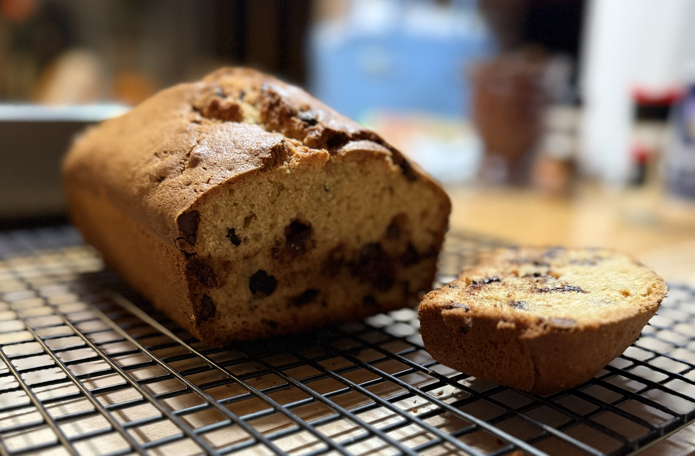

Home
Sourdough Discard Chocolate Chip Bread
Sometimes you have more sourdough starter than you know what to do with. Rather than tossing the excess, you can use it in recipes to add a tangy flavor. This chocolate chip bread is a delicious way to make use out of all that extra starter.
The original recipe can be found here.

Ingredients
8 tbsp melted butter
1/2 cup sugar
1/2 cup brown sugar
1 tsp vanilla
2 large eggs
3/4 cup sourdough discard
1/4 cup milk
2 cups all-purpose flour
1/2 tsp salt
1 tsp baking powder
1/2 tsp baking soda
1 cup chocolate chips
Steps
Preheat oven to 350, melt butter and set it aside to cool, and grease your loaf pan
Add cooled butter, white and brown sugar, vanilla, eggs, sourdough discard, and milk to a large mixing bowl and whisk until smooth
In a separate bowl, combine flour, salt, baking powder, and baking soda
Gradually add dry ingredients to the wet ingredients, mixing until just combined
Fold in chocolate chips with a spatula, then transfer to the loaf pan
Bake for 65-75 minutes or until golden brown
Cool before slicing